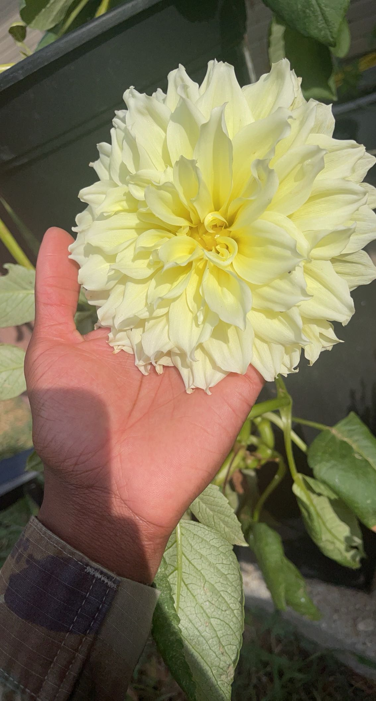

I’m a person who finds immense joy in some pretty simple things. First and foremost, I’m a total foodie. I absolutely love diving into the culinary traditions of different cultures. Cooking is my creative outlet, where I get to experiment with flavors and recreate delicious dishes from around the world. From spicy curries to cheesy Italian pasta, I’m always up for trying something new in the kitchen.
About Me
When I'm not assisting teams in finding their stride and fostering a wholesome work-life balance, I enjoy indulging in the following activities
Cooking

Gardening
Apart from my adventures in the kitchen, I’m also a bit of a plant enthusiast. My home is basically a mini jungle, filled with all sorts of green buddies. I find real happiness in watching plants grow from tiny seeds or baby saplings into thriving, leafy companions. There's something incredibly satisfying about taking care of these little guys and watching them flourish.

Reading
Oh, and I’m a bookworm too! I love getting lost in the pages of a good book. Learning new things and exploring different topics through reading is one of my favorite pastimes. Whether it’s a gripping novel or a non-fiction piece that teaches me something new, I’m always up for a good read. So, that’s me in a nutshell – a food lover, plant enthusiast, and avid reader, just enjoying the simple things in life.